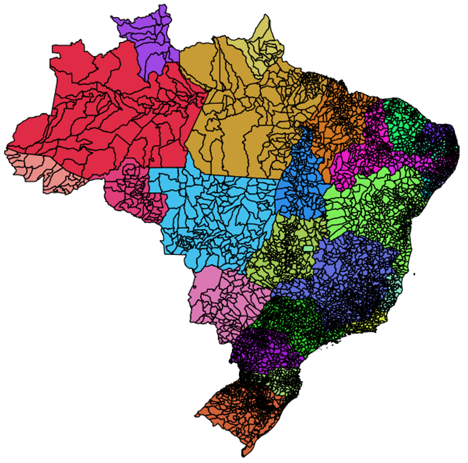
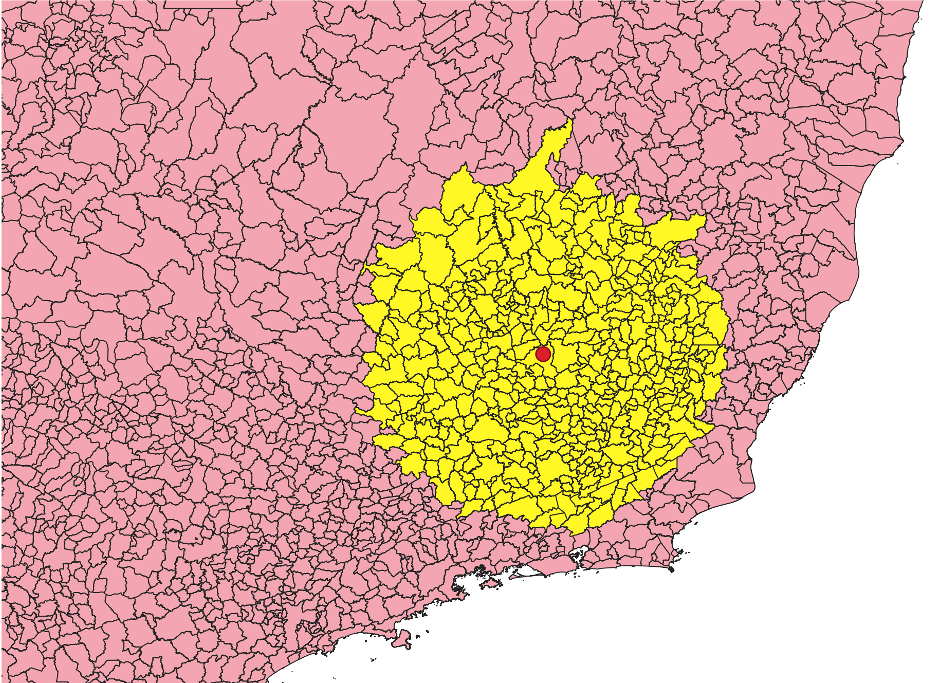

3.5.4. Consultas de Proximidade
3.5.4.1. Carga de Dados - Municípios do Brasil
Considere o conjunto ESRI Shapefile mostrado na Tabela 3.31, que contem os limites municipais do Brasil referentes ao ano de 2018. Faça a carga desse conjunto de dados de acordo com as informações apresentadas nessa tabela.
 |
Municípios do Brasil - 2018
Tipo Geométrico: MultiPolygon
|
Carga Dados:
Carregando os dados dos municípios brasileiros usando o comando shp2pgsql e o psql:
shp2pgsql -c -g "geom" -s 4674 -i -I -t "2D" -W UTF-8 municipios_2018.shp public.municipios > municipios.sql
psql -U postgres -h localhost -p 5432 -d bdgeo -f municipios.sql
3.5.4.2. Consulta
Consulta: Quais os municípios num raio de 2 graus da coordenada \((-43.59, -20.32)\)?
|
 |
Solução:
SELECT *
FROM municipios
WHERE ST_DWithin(
geom,
ST_GeomFromText('POINT(-43.59 -20.32)', 4674),
2.0
);
Nota
Este tipo de consulta também é conhecida por Proximity Query.